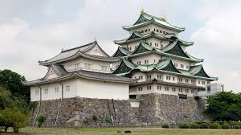
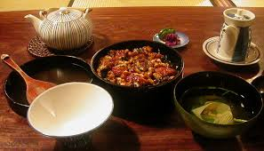
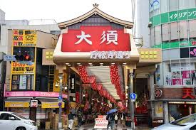

名古屋城は徳川家康によって築かれた名古屋を代表する名所です。 金のしゃちほこや本丸御殿など、多くの見どころがあります。
名古屋の魅力
名古屋には歴史・文化・グルメなど、多くの魅力があります。 今回はその中から3つをご紹介します。
名古屋城

ひつまぶし

名古屋めしの代表格であるひつまぶし。 そのまま・薬味・だし茶漬けと、三通りの味わい方を楽しめます。
大須商店街

約1200店舗が並ぶ名古屋を代表する商店街です。 食べ歩きやショッピングを楽しめる人気スポットです。